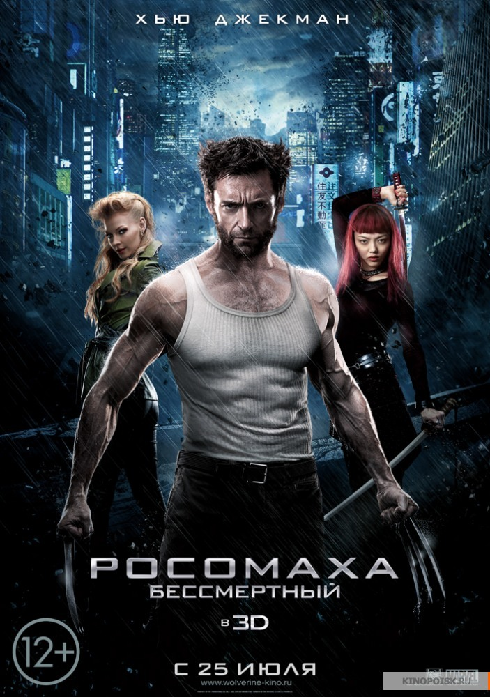

Բարի Գալուստ իմ առաջին էջ
+37498941429
+37491111294
Росомаха: Бессмертный
Пережив огромное количество потерь, Логан в который раз убеждается в том, что на самом деле его дар является проклятием, портящим ему жизнь. Чтобы не приносить никому горя и окончательно не утратить смысл жизни, он становится отшельником и начинает употреблять много алкоголя. В одном из баров он знакомится с девушкой по имени Юкио, которая просит его отправиться вместе с ней в Японию, где ее ждет глава якудза Яшида, доживающий свои последние дни. Когда-то Логан спас этому человеку жизнь и теперь он хочет ответить ему благодарностью. Он предлагает Росомахе избавиться от проклятия и стать обычным смертным. Однако потеряв способность быстрого восстановления организма, Логан понимает, что теперь ему будет очень сложно бороться с опасными врагами...
Пережив огромное количество потерь, Логан в который раз убеждается в том, что на самом деле его дар является проклятием, портящим ему жизнь. Чтобы не приносить никому горя и окончательно не утратить смысл жизни, он становится отшельником и начинает употреблять много алкоголя. В одном из баров он знакомится с девушкой по имени Юкио, которая просит его отправиться вместе с ней в Японию, где ее ждет глава якудза Яшида, доживающий свои последние дни. Когда-то Логан спас этому человеку жизнь и теперь он хочет ответить ему благодарностью. Он предлагает Росомахе избавиться от проклятия и стать обычным смертным. Однако потеряв способность быстрого восстановления организма, Логан понимает, что теперь ему будет очень сложно бороться с опасными врагами...
Год выпуска: 2017
Страна: Австралия,США
Жанр: фантастика, боевик, триллер, приключени
Перевод: Дублированный
Продолжительность: 02:06:31
Премьера (РФ): 2 марта 2013
Режиссер: Джеймс Мэнголд
В ролях: Хью Джекман, Тао Окамото, Рила Фукусима, Светлана Ходченкова, Уилл Юн Ли, Харукико Яманоути, Хироюки Санада, Брайан Ти, Кен Ямамура, Фамке Янссен